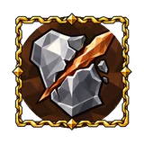

Blunt damage¶
A physical damage type that builds armour break. Stagger uses the hit's separate stagger power.
How it works¶
All the increased and reduced damage that applies to a hit is added into one sum, and the hit is multiplied by 1 + that sum once: general damage, your weapon kind's, melee, ranged or spell damage, attacks', alternative attacks', that of hits that aren't projectiles, a running attack's bonus, and the increases that depend on the enemy (below).
A scepter's hits count as the kind of attack they are: its spells take spell damage increases, its other attacks melee or ranged ones.
Each damage type adds its own increases to the sum, for that type only: fire, frost and lightning also add elemental damage increases, and slash, pierce and blunt add physical damage increases. So +50% damage and +50% fire damage make fire damage × 2, not × 2.25.
Projectiles: projectile damage increases join the sum too, with the projectile speed increases any of your stats turn into damage, and so do a torch's damage increases.
Bows and crossbows split each shot in two parts. The ammo's share is its damage ÷ (the weapon's damage + the ammo's). That part takes the sum without your bow or crossbow damage increases, plus your projectile damage increases (bow or crossbow projectile ones included); the weapon's part takes the sum as it is, without projectile increases.
Chopping and mining: increases against trees, ore and resources join the same sum, and so flat damage against them grows with the whole sum.
Every step of a hit, in order: Order of a hit.
With the other mechanics: Combat and building.
Referenced by¶
Passive Tree¶
Notables¶
| Name | Effect | |
|---|---|---|
| Bone Beneath Iron | 30% increased blunt damage on block recently 80% increased armour break build-up on block recently |
|
| Counterblow's Weight | 40% increased blunt damage with attacks on block recently | |
| Forge's Weight | 40% increased armour break build-up with blunt damage | |
| Mass of the Verdict | 10% increased blunt knockback | |
| Poll's Song | 15% increased blunt damage | |
| Ring of Bones | 15% increased blunt damage 40% increased stagger build-up |
|
| Steel to the Bone | 20% increased blunt damage with attacks | |
| Thorny Forging | 20% increased blunt damage with attacks | |
| Troll's Weight | 40% increased stagger build-up with blunt damage |
Masteries¶
| Option | Effect | |
|---|---|---|
| Ember of the Maul | Gain 27% of blunt damage as extra fire on your next hit after parrying ×0.55 stagger build-up on your next hit after parrying |
|
 |
Jagged Breach | 22.5% blunt damage converted to slashing against enemies with broken armour |
| Sparking Club | 50% blunt damage converted to fire with clubs | |
| Split the Blow | 50% blunt damage converted to slashing | |
| Steel Ablaze | 50% blunt damage converted to fire with attacks |
Small passives¶
| Stat | Nodes |
|---|---|
| 8% increased blunt damage with attacks | 10 |
| 6% increased blunt damage | 7 |
| 4% increased blunt knockback | 4 |
| 16% increased armour break build-up with blunt damage | 2 |
| 16% increased stagger build-up with blunt damage | 2 |
Items¶
Mods (9)¶
| Mod | Type | Rolls on | From (item level) |
|---|---|---|---|
| #% increased blunt damage | Prefix | must be jewel and Strength jewel | Meadows (1) |
| #% increased blunt damage | Prefix | must be ring | Meadows (1) |
| #% increased blunt damage with attacks per # points of current armour | Prefix | must be jewel and Strength jewel | Meadows (1) |
| #% increased blunt damage with attacks per # points of current armour | Prefix | must be jewel and Strength–Dexterity jewel | Meadows (1) |
| #% increased stagger build-up with blunt damage | Suffix | must be weapon; one of axe, crossbow or spear | Meadows (1) |
| #% increased stagger build-up with blunt damage | Suffix | must be jewel and Strength jewel | Meadows (1) |
| #% increased stagger build-up with blunt damage | Suffix | must be jewel and Strength–Dexterity jewel | Meadows (1) |
| #% increased blunt damage | Prefix | must be weapon; one of club or pickaxe | Unimplemented |
| +# blunt damage | Suffix | must be ring | Unimplemented |
Mentioned in¶
Data from Path of Valheiman 5.3.2, extracted 2026-10-24.